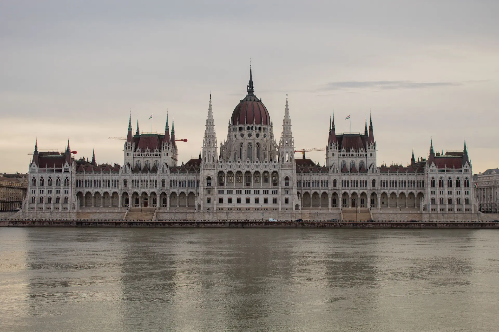
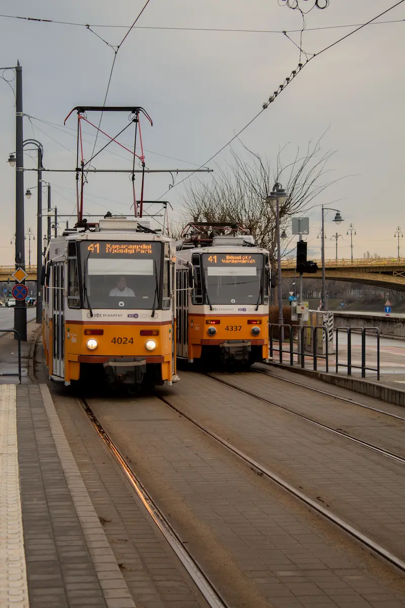
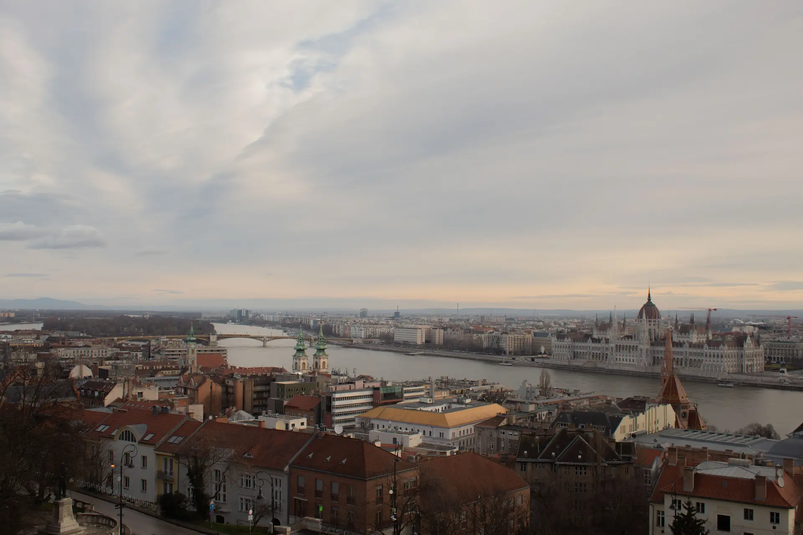
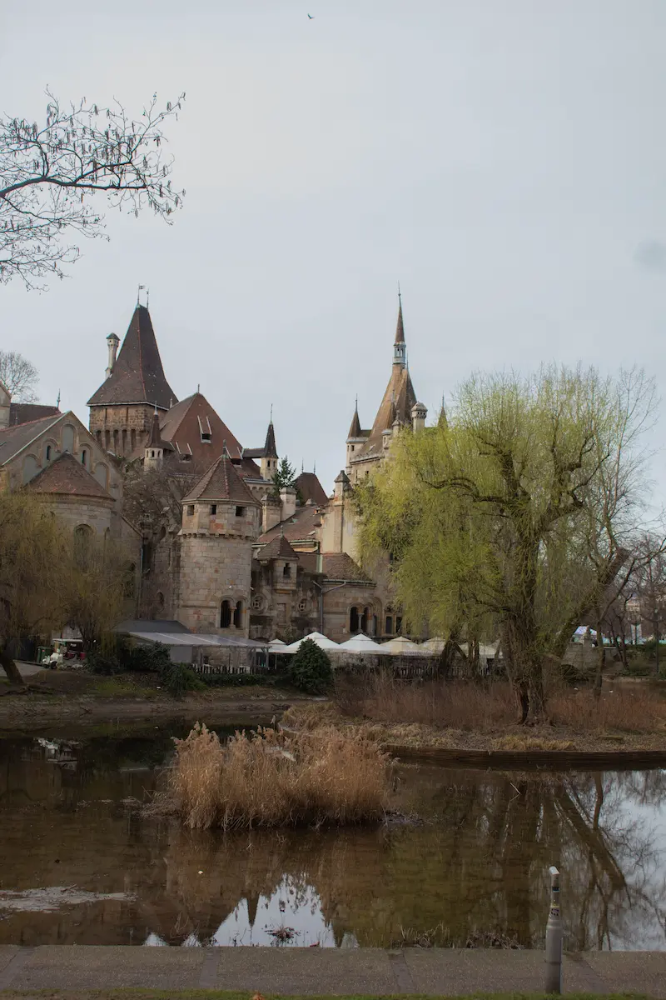
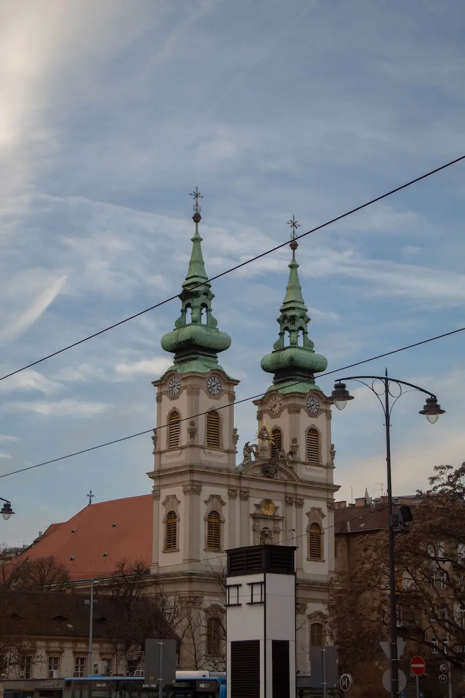

Budimpešta
Mađarska
20°C
Glavni grad Mađarske. Ovo je jedan od najljepših gradova u Europi. Najpoznatiji je po zgradi parlamenta i cipelama na obali rijeke Dunav.
O smještaju
- Besplatan WiFi
- Kuhinja sa svim osnovnim aparatima
- Klimatizacija
- Dvije kupaonice
- Terasa sa pogledom na centar
Cijena: 599€ 699€
4 noćenja - 2 osobe - povratna avionska karta
Općenito o destinaciji
Glavni grad Mađarske. Ovo je jedan od najljepših gradova u Europi. Najpoznatiji je po zgradi parlamenta i cipelama na obali rijeke Dunav.
Zašto baš Budimpešta
Grad ima prekrasnu arhitekturu i bogatu povijest. Idealan je za vikend putovanja zato što se sve najbitnije može brzo obići.
Top lokacije
Mađarski parlament
Jedna on najljepših u Europi.
Budimpešta vidikovac
Najbolji pogled u gradu.
Dvorac Vajdahunyad
Dvorac u blizini centra grada.
Informacije o rezervacijama
Što je uključeno?
- Povratna avionska karta
- Prijevoz od aerodroma do hotela
- Doručak u hotelu
- Prijevoz između atrakcija
Uvjeti rezervacije
Rezervacije se mogu napraviti najmanje tjedan dana prije polaska.
Otkazivanje putovanja moguće je do 48 sati prije polaska.
Za državljane EU nije potrebna viza.
Check-in je od 14:00 sati.
Popularne destinacije